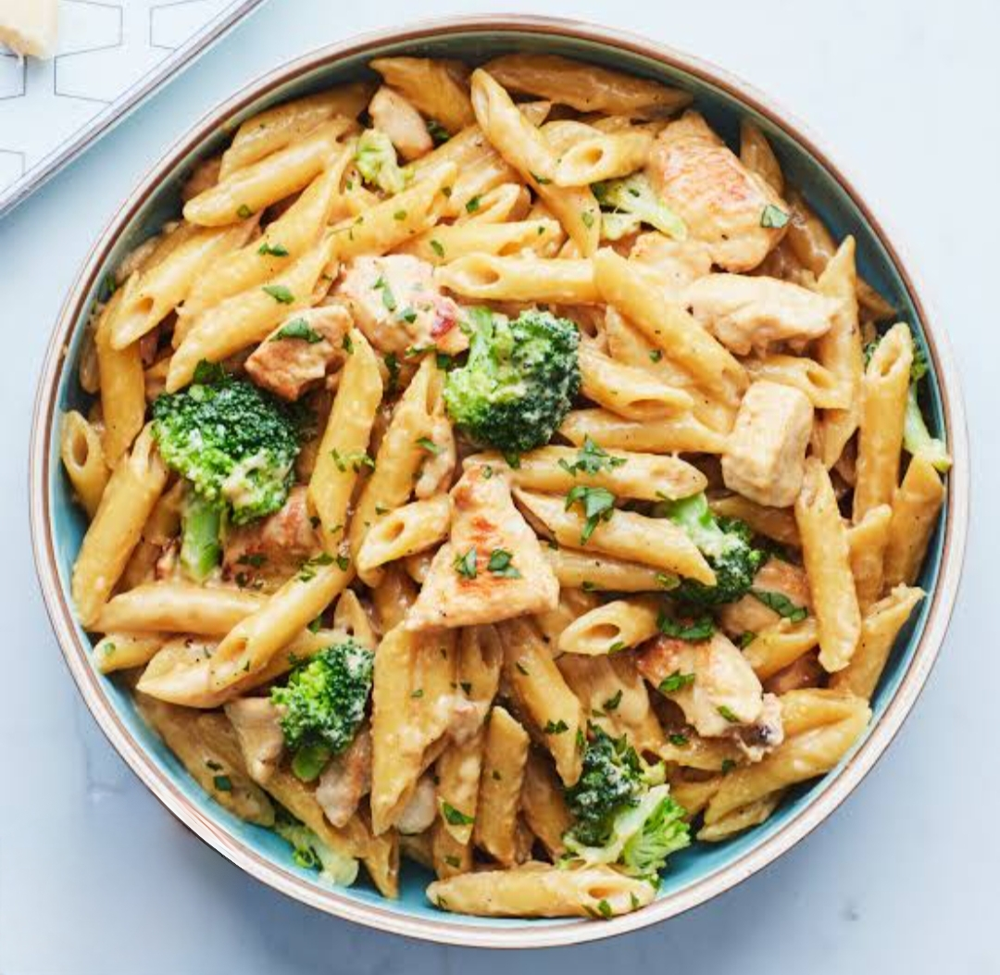

PASTA

Ingredients:
- pound pasta (spaghetti, linguine, or your choice)
- 2 tsp olive oil
- onion, finely chopped
- garlic cloves, minced
- 1 cup cherry tomatoes, halved
- 1 cup grated mozzarella cheese(optional)
- salt and pepper, to taste
- fresh basil leaves, chopped(optional)
Instructions:
- Bring a large pot of salt water to boil
- Add pasta and cook according to package instructions(8-10min).
- Reserve 1cup pasta water before draining.
- Heat olive oil in large skillet over medium heat.
- Add chopped onion and cook until translucent (3-4minutes).
- Add minced garlic and cook 1minute.
- Add cherry tomatoes and cook until they release juices (3-4minutes).
- Season with salt and pepper to taste.